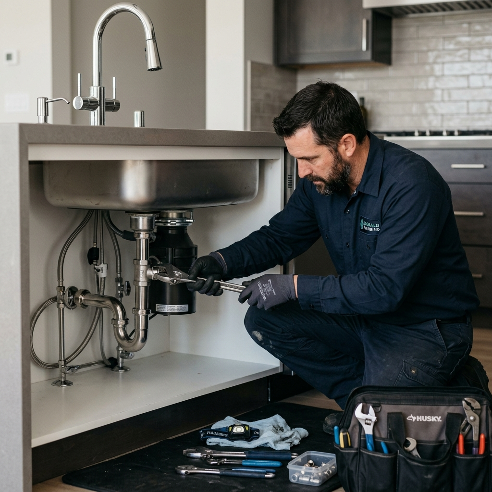

Fast, reliable maintenance solutions for leaks, sinks, and installations. Proudly serving all of Tyneside.

We focus on delivering rapid, effective solutions for your home's water and drainage systems. Whether it's the kitchen or the bathroom, we ensure your daily utilities function flawlessly without the hefty emergency call-out fees of giant corporations.
We inspect hidden pipework, check for slow leaks, and help you choose the best water-saving fixtures for lower bills and fewer repairs.
Take a quick picture or video of the leak, or the new appliance you want installed, and send it to our WhatsApp. We'll give you an immediate solution and quote!
Message Us Now